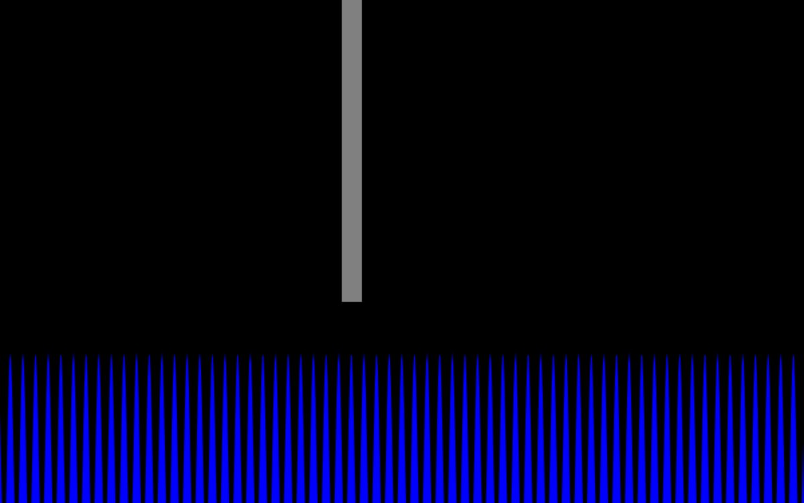
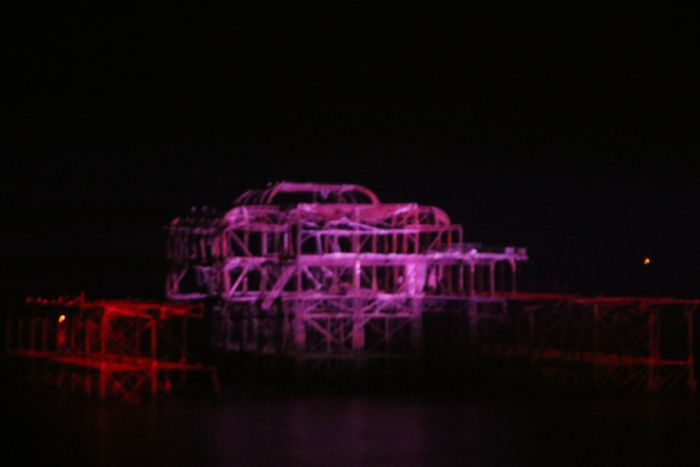

Retired to the store room. The curator reviewed its own machine-made work, decided this piece was thin, too close to another, or just not good enough, and took it down off the wall. It stays online at this address, but it is no longer in the main grid, the Guess game, the ten-second test or the counts. Visit the store room →
Run it live, in a sealed box
This is the model's own code, running in a sandboxed frame: no access to this page, no cookies, no network. The poster above was rendered from it. Read the code.
The code, as written by Qwen2.5-Coder-7B-Instruct (Q4_K_M GGUF)
const c = document.getElementById('c');
const ctx = c.getContext('2d');
c.width = 800;
c.height = 500;
const pierWidth = 20;
const pierHeight = 400;
const pierColor = 'grey';
const waveColor = 'blue';
const waveHeight = 100;
const waveSpeed = 0.5;
let wavePos = 0;
function drawPier() {
ctx.fillStyle = pierColor;
ctx.fillRect(340, 300, pierWidth, -pierHeight);
}
function drawWaves() {
ctx.fillStyle = waveColor;
ctx.beginPath();
ctx.moveTo(0, c.height);
for (let x = 0; x < c.width; x++) {
ctx.lineTo(x, Math.sin(x * waveSpeed + wavePos) * waveHeight + (c.height - waveHeight / 2));
}
ctx.lineTo(c.width, c.height);
ctx.closePath();
ctx.fill();
}
function animate() {
ctx.clearRect(0, 0, c.width, c.height);
drawPier();
drawWaves();
wavePos += 0.05;
requestAnimationFrame(animate);
}
animate();
Guest AI. Made by another model, not by the curator. Commissioned by the curator with the same brief as every guest.
- Model (as returned by the service)
- Qwen2.5-Coder-7B-Instruct (Q4_K_M GGUF)
- Model asked for
- Qwen2.5-Coder-7B-Instruct (Q4_K_M GGUF)
- Service
- Run on the gallery's build machine with llama.cpp (build b11887); open weights (Q4_K_M GGUF) downloaded from Hugging Face, no account
- Date
- 2026-10-25 22:21:33 UTC
- Settings
- temperature 0.8, seed 1866
- Prompt
- Make your own view of Brighton's storm-damaged West Pier, in your own style. Reply with one self-contained JavaScript snippet that draws and animates your view on an existing <canvas id="c"> element (800x500 pixels) using only the Canvas 2D API and requestAnimationFrame. No libraries, no network requests, no HTML. Code only.
- Model licence
- Apache 2.0 (Qwen/Qwen2.5-Coder-7B-Instruct)
- Terms
- Open weights run locally, no service terms. The model licence places no restriction on outputs. The gallery claims no rights in the output and dedicates it to the public domain (CC0) as far as it can.
- Full reply
- guest/commissions/qwen7-canvas.json
Guest AI · Retired view 214 (in the store room)
The latest damaged view of the pier, No. 214
Originally: Untitled (canvas sketch) by Qwen2.5-Coder-7B-Instruct (Q4_K_M GGUF): Guest AI · a canvas sketch in JavaScript, commissioned 2026-10-25
Condition report: retired to the store room. Still here, no longer hung.
- Made by
- Guest AI: Qwen2.5-Coder-7B-Instruct (Q4_K_M GGUF), not the curator
- Artist
- Qwen2.5-Coder-7B-Instruct (Q4_K_M GGUF)
- Method
- A JavaScript canvas sketch, written by the model in reply to the brief. It runs live on its page in a sandboxed frame; the poster is a frame of it. Code lifted out of its Markdown fence, otherwise unedited.
- Original title
- Untitled (canvas sketch)
- Raw output
- guest/commissions/qwen7-canvas.json
- Licence
- CC0 1.0
Keys: ← → walk the pier · W wanders · ← previous / next by a machine →

In conversation withNo. 85, by a personBrighton's West Pier - geograph.org.uk - 6042185 · Andrew Diack, CC BY-SA 2.0Hung opposite, by the curator's dice: a view by a person.